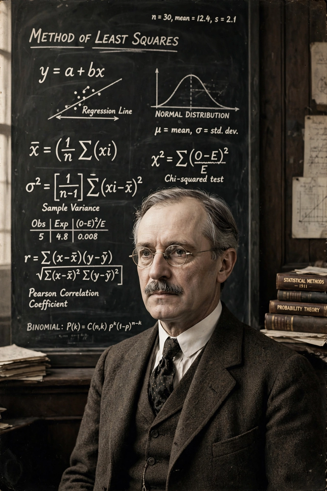

Ronald Fisher

| Sir Ronald Aylmer Fisher | |
|---|---|
| Born | 17 February 1890, London, England |
| Died | 29 July 1962 (aged 72), Adelaide, Australia |
| Fields | Statistics, genetics, evolutionary biology |
| Institutions | Rothamsted Research; University College London; Cambridge |
| Known for | Modern synthesis; maximum likelihood; ANOVA; Fisher's exact test; fundamental theorem of natural selection |
| Awards | Royal Medal (1938); Copley Medal (1955) |
Sir Ronald Aylmer Fisher (17 February 1890 – 29 July 1962) was a British polymath active as a mathematician, statistician, biologist, geneticist, and academic. He has been described as "a genius who almost single-handedly created the foundations for modern statistical science" and as the father of modern statistics and experimental design.
Contributions to statistics
At Rothamsted Experimental Station from 1919, Fisher developed the analysis of variance (ANOVA), principles of experimental design — randomisation, blocking, and factorial experiments — set out in Statistical Methods for Research Workers (1925) and The Design of Experiments (1935). He introduced the concepts of maximum likelihood estimation, sufficiency, fiducial inference, the p-value convention of 0.05, and Fisher's exact test; the F-distribution bears his name (via Snedecor). His work underlies the standard methods of significance testing used across the sciences.
Genetics and evolution
Fisher's 1918 paper reconciled Mendelian inheritance with continuous variation, resolving the biometrician–Mendelian controversy. His book The Genetical Theory of Natural Selection (1930) founded population genetics and stated his fundamental theorem of natural selection; with J. B. S. Haldane and Sewall Wright he was a principal architect of the modern synthesis. He also proposed the Fisherian runaway model of sexual selection and the principle that sex ratios evolve toward equality (Fisher's principle).
Later life and controversies
Fisher was Galton Professor of Eugenics at University College London (1933–1943) and Arthur Balfour Professor of Genetics at Cambridge (1943–1957). His lifelong support of eugenics, his race-related writings, and his paid consultancy disputing the smoking–lung cancer link have made his legacy contentious; institutions have removed his name from buildings and windows in recent years. He died in Adelaide in 1962.